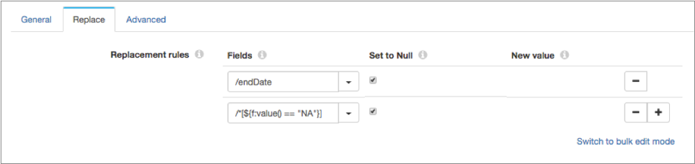
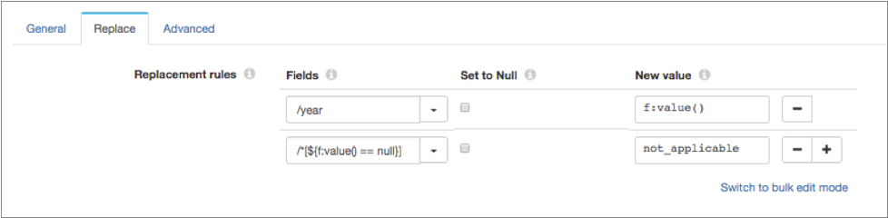

Field Replacer
The Field Replacer replaces values in fields with nulls or with new values. Use the Field Replacer to update values or to replace invalid values.
When you configure the processor, you define the replacement rules to use. You can replace all values in a specified field or you can replace a set of values in the field based on a condition. To replace values based on a condition, use a field path expression to conditionally define the field values to replace.
If you define multiple replacement rules, Field Replacer replaces values in the order that the rules are listed in the processor.
You can also configure error handling for when a field does not exist.
Replacing Values with Nulls
Use the Field Replacer processor to replace values in a field with null values. You can replace all values with nulls or you can replace a set of values based on a condition.
To replace all values in a field, simply specify a field and then select Set to Null.
To replace a set of values with nulls based on conditions, use a field path expression to specify the conditions that you want to use, and then select Set to Null.
For example, the following configuration includes two replacement rules. The first rule sets all values in the endDate field to null values. The second rule uses a field path expression to conditionally set only field values with a value of "NA" to null values:

/*[${f:value() == "NA" || f:value() == 'not_applicable'}]
Replacing Values with New Values
Use the Field Replacer processor to replace values in a field with new values. You can replace all values or you can replace a set of values based on a condition.
To replace all values in a field, simply specify a field and then specify the new value.
To replace a set of values based on conditions, use a field path expression to specify the conditions that you want to use, and then specify the new value.
For example, the following configuration includes two replacement rules. The first rule sets all values in the year field to the new value "2018". The second rule uses a field path expression to conditionally set only field values with a null value to the new value "not_applicable":

To include multiple conditions in the field path expression, use logical operators such as && or ||. For example, the following field path expression returns all values in the storeId field that are set to "0289":
/*[${f:path() == '/storeId' && f:value() == '0289'}]
Data Types for Conditional Replacement
- Byte
- Double
- Float
- Integer
- Long
- Short
- String
Configuring a Field Replacer
Use a Field Replacer to replace values in fields.
-
In the Properties panel, on the General tab, configure the
following properties:
General Property Description Name Stage name. Description Optional description. Required Fields 
Fields that must include data for the record to be passed into the stage. Tip: You might include fields that the stage uses.Records that do not include all required fields are processed based on the error handling configured for the pipeline.
Preconditions Conditions that must evaluate to TRUE to allow a record to enter the stage for processing. Click Add to create additional preconditions. Records that do not meet all preconditions are processed based on the error handling configured for the stage.
On Record Error Error record handling for the stage: - Discard - Discards the record.
- Send to Error - Sends the record to the pipeline for error handling.
- Stop Pipeline - Stops the pipeline. Not valid for cluster pipelines.
-
On the Replace tab, configure the following properties
for each replacement rule:
Replacement Rule Property Description Fields Fields to replace. To replace all values in the fields, specify individual fields. To replace a set of values in the fields based on a condition, use a field path expression to specify the condition that you want to use. Tip: To use all fields, you can use the asterisk wildcard as follows: /*. You can also use the asterisk wildcard to represent array indices and map elements.Set to Null 
Replace the field values with null. New Value
Replacement value to use. Enter a value or enter an expression that evaluates to the value.